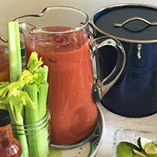
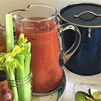
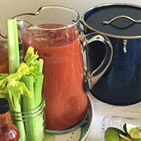

Hi! My name is Andrea, and I'm an amateur knitter, crocheter, cook, and all-around crafter who loves creating things by hand ...
from homemade pickles to handknit scarves, I'll try making (almost) anything once in my quest to follow in the footsteps of Martha Stewart, Queen of Crafts.
